PSTAT 100: Lecture 05
The Geometry of Data
Department of Statistics and Applied Probability; UCSB
Summer Session A, 2025
\[ \newcommand\R{\mathbb{R}} \newcommand{\N}{\mathbb{N}} \newcommand{\E}{\mathbb{E}} \newcommand{\Prob}{\mathbb{P}} \newcommand{\F}{\mathcal{F}} \newcommand{\1}{1\!\!1} \newcommand{\comp}[1]{#1^{\complement}} \newcommand{\Var}{\mathrm{Var}} \newcommand{\SD}{\mathrm{SD}} \newcommand{\vect}[1]{\vec{\boldsymbol{#1}}} \newcommand{\Cov}{\mathrm{Cov}} \newcommand{\mat}[1]{\mathbf{#1}} \newcommand{\tmat}[1]{\mathbf{#1}^{\mathsf{T}}} \newcommand{\vect}[1]{\vec{\boldsymbol{#1}}} \newcommand{\tvect}[1]{\vec{\boldsymbol{#1}}^{\mathsf{T}}} \DeclareMathOperator*{\argmax}{\mathrm{arg} \ \max} \]
Big Data
How many of you have heard the term big data?
At the most basic level, big data is data that is big. But what do we really mean by “big,” especially seeing as datasets are comprised by both the number of observations and the number of variables?
Essentially there are three situations to consider:
- A large number of both observations and variables
- A much larger number of observations than variables
- A much larger number of variables than observations
Big Data
With the continued improvement of computers and computing, the first two cases on the previous slide are not of as great concern as they were, say, 10 years ago.
However, the third case is still an active area of research.
- When we have more variables than observations (or even just an absurdly large number of variables), things start to break down quickly, as we will shortly see.
So, a natural question arises: given a dataset, are all dimensions (variables?) really necessary to convey all of the necessary information?
The answer, in some cases, turns out to be “no.”
Big Data
We’ll spend the better part of two lectures addressing the details behind this answer.
There are a few things we’ll need to discuss first.
- For example, what do we really mean by the “dimension” of a dataset?
- What does it mean to “convey necessary information?”
The very first thing we’ll do today is to establish a more mathematical framework for discussing data.
- This is somewhat in contrast to the “data science” view we took last week, breaking data into its semantics and structure.
First, let’s take a brief interlude to talk about some numerical summaries of data.
Interlude: Summary Statistics
Summary Statistics
Central Tendency
Given a list
x= (x1, …,xn) of n numbers, there are a series of numerical summaries we can provide.- I suspect you will all have seen these concepts before, so I’ll go through them relatively quickly.
First question: what is the “center” (or “most typical value”) of
x? (Relates to measures of central tendencey)Two main answers: median and mean.
To find the median, line up the data in ascending order and then tick off the first and last elements; repeat this process until you are either left with one value (the median), or two values (in which case you add these two values and divide by 2 to obtain the median).
Summary Statistics
Central Tendency
For example, the median of the set \(\{-1, 4, 5, 6, 10\}\) is 5 and the median of the set \(\{-1, 4, 5, 6, 10, 12\}\) is 5.5 (I encourage you to do this computation on your own, as practice).
The definition of the sample mean is \[ \overline{x}_n := \frac{1}{n} \sum_{i=1}^{n} x_i \]
So, for example, the mean of \(\{-1, 4, 5, 6, 10\}\) is 4.8, which we calculated by summing up all five elements and then dividing by 5.
Summary Statistics
Central Tendency
- One way to interpret the mean is as follows: imagine placing a weight of unit 1 at each point xi. Then, imagine finding the point such that a fulcrum placed at this point would result in a perfectly balanced system. The location of this point is the sample mean \(\overline{x}_n\).
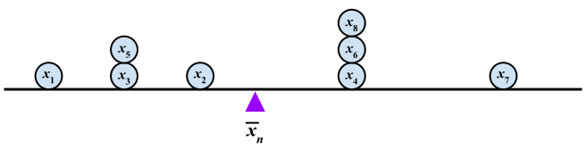
- In
R, we usemean()andmedian()to compute the mean and median (respectively) of a set of numbers, as we saw in Lab01.
Summary Statistics
Variability
To express how “spread out,” or “variable,” \(\vect{x}\) is, there are three common measures:
- Range: \(\max\{\vect{x}\} - \min\{\vect{x}\}\)
- Sample Variance: \(\frac{1}{n - 1} \sum_{i=1}^{n} (x_i - \overline{x}_n)^2\)
- The sample standard deviation is just the square root of the sample variance.
- Inter-Quartile Range (IQR): \(Q_3 - Q_1\)
The variance is perhaps most commonly used, as it has a simple interpretation as the “average distance from the center.”
- In
R, these are computed usingdiff(range()),var(), andIQR(), respectively.
- In
Your Turn!
Your Turn!
Consider the list of numbers x = \((1.1, \ 2.4, \ 5.6, \ 7.8, \ 100.1)\).
Calculate both the mean and median of
x. Which do you think is a “better” description of the central value ofx?Calculate the range, standard deviation (square root of variance), and IQR of
x. Which do you think is a “better” description of the spread ofx?
04:00
Back to Data
Data Matrix
- Let’s now consider a dataset comprised of n observations across p numerical variables.
| Name | Height (in) | Weight (lbs) |
|---|---|---|
| Alex | 61.5 | 130.3 |
| Biyonka | 72.4 | 180.6 |
| Catherine | 58.4 | 86.7 |
- As an example, consider the dataset to the left with three observations on two numerical variables (height and weight).
- Stripping away the
Namecolumn and any extraneous formatting information (cell borders, column titles, etc.), what mathematical object are we left with?- That is, what mathematical object is a grid of numbers?
Data Matrix
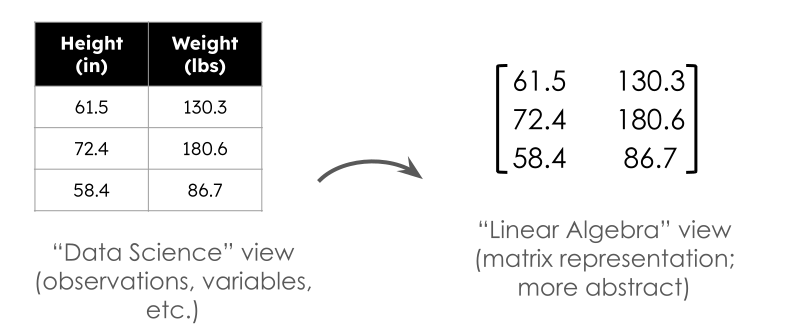Data Matrix
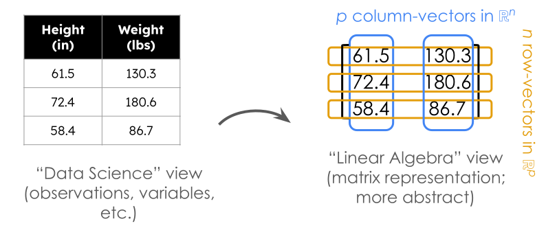Data Matrix
More generally, consider a dataset with n observations and p variables.
The data matrix is the (n × p) matrix \(\mat{X} = \{x_{ij}\}\) such that xij is the ith observation on the jth variable.
As indicated in the diagram on the previous slide, there are two ways to think of a matrix: we can call these “row-wise” and “column-wise” viewpoints
- In the “column-wise” viewpoint, we think of \(\mat{X}\) as being comprised of p vectors of length n
- In the “row-wise” viewpoint, we think of \(\mat{X}\) as being comprised of n transposed vectors of length p
- Essentially, these two viewpoints relate the question: is our data a collection of observations, or a collection of variables?
Data Matrix
Two Viewpoints
For illustrative purposes, consider again our mock height-weight dataset from before: \[ \mat{X} = \begin{pmatrix} 61.5 & 130.3 \\ 72.4 & 180.6 \\ 58.4 & 86.7 \\ \end{pmatrix} \]
The row-wise viewpoint says: our dataset is comprised of three transposed vectors in \(\R^2\): \[ \left\{ \begin{pmatrix} 61.5 \\ 130.3 \\ \end{pmatrix}, \ \begin{pmatrix} 72.5 \\ 180.6 \\ \end{pmatrix} , \ \begin{pmatrix} 58.4 \\ 86.7 \\ \end{pmatrix} \right\} \]
- Each element represents an individual.
Data Matrix
Two Viewpoints
- The column-wise viewpoint says: our dataset is comprised of two vectors in \(\R^3\): \[ \left\{ \begin{pmatrix} 61.5 \\ 72.4 \\ 58.4 \\ \end{pmatrix}, \ \begin{pmatrix} 130.3 \\ 180.6 \\ 86.7 \\ \end{pmatrix} \right\} \]
- Each element now represents a variable.
- Let’s see what happens if we “plot” our data under these two viewpoints.
Geometry of Data
An Example
Cloud of Individuals: each point represents an individual in the dataset.
Geometry of Data
An Example
Cloud of Variables: each point represents the direction of a variable in the dataset (“how can the variable be described based on the individuals?”).
Data Matrix
Two Perspectives
There isn’t necessarily one viewpoint (row-wise or column-wise) that is always “better” than the other.
- Indeed, it’s often useful to be able to switch between the two viewpoints.
When dealing with numerical considerations, however, the column-wise viewpoint is often preferred.
Firstly, all values in a column of a data matrix will be of the same units; this is not the case of the values across a row of the data matrix.
Secondly, the column-wise viewpoint allows us to compare variables as opposed to comparing units.
So, let’s stick with the column-wise viewpoint for now.
Geometry of Data
It turns out that many of the summary statistics we talked about earlier today have very nice correspondences with quantities from linear algebra.
As an example, consider a vector \(\vect{x} = (x_1, \cdots, x_n)^{\mathsf{T}}\) that represents a column from a particular data matrix (i.e. a variable in the cloud of variables). Further suppose that \(\overline{x}_n = 0\) (i.e. that the data is mean-centered)
We then have that \[ \| \vect{x} \| := \sum_{i=1}^{n} x_{i}^2 \ \stackrel{(\overline{x}_n = 0)}{=} \ \sum_{i=1}^{n} (x_i - \overline{x}_n)^2 \]
- Which summary statistic does this look like?
Geometry of Data
For two vectors \(\vect{x} = (x_1, \cdots, x_k)^{\mathsf{T}}\) and \(\vect{y} = (y_1, \cdots, y_k)^{\mathsf{T}}\), their dot product \[ \langle \vect{x}, \vect{y} \rangle := \vect{x} \cdot \vect{y} = \sum_{i=1}^{n} x_i y_i \] can be interpreted in terms of the sample covariance between two sets of observations.
The mean is related to the inner product between \(\vect{x}\) and the unity vector: \[ \langle \vect{x} , \vect{1} \rangle = \begin{pmatrix} x_1 & \cdots & x_n \\ \end{pmatrix} \begin{pmatrix} 1 \\ \vdots \\ 1 \\ \end{pmatrix} = \sum_{i=1}^{n} x_i\]
Geometry of Data
So, again, we see that many of our familiar “statistical” quantities have direct correspondences with Linear Algebra quantities - this is one of the reasons Linear Algebra is so important in Statistics!
Furthermore, this connection allows us to (in the column-wise viewpoint) obtain summaries of our variables by performing familiar geometric operations.
- Want to know how correlated two variables in a dataset are? Take the inner product of their observations!
- Want to know the variability of a particular variable? Find the norm of the vector of observations!
Speaking of Linear Algebra (and slowly turning our attention back to the initial question from the start of today’s lecture), let’s discuss the “dimensionality” of a dataset.
Dimensionality
Different Perspectives
| Height (in) | Weight (lbs) |
|---|---|
| 61.5 | 130.3 |
| 72.4 | 180.6 |
| 58.4 | 86.7 |
This dataset seems to have 2 dimensions
| Height (in) | Height (cm) |
|---|---|
| 61.5 | 156.21 |
| 72.4 | 183.90 |
| 58.4 | 148.34 |
How many dimensions does this data have?
(How many variables contribute new information?)
Dimensionality
Different Perspectives
- From a “data science” perspective, we can think of “dimensionality” (in the column-wise viewpoint) as the number of variables that provide new information.
- For instance, in the dataset on the right of the previous slide, we really only have one variable (
height) - just because we’ve written it down twice doesn’t mean we’ve gained any new information.
- For instance, in the dataset on the right of the previous slide, we really only have one variable (
- This is essentially in line with the “Linear Algebra viewpoint” of dimensionality - the dimension of a matrix is just its rank.
- In the column-wise viewpoint, we can think of dimension as just the column rank - i.e. the number of linearly independent columns.
- But, there are a few differences:
Dimensionality
Different Perspectives

How many dimensions does this data have?

How many dimensions does this data have?

How many dimensions does this data have?
Dimensionality
Different Perspectives

Only 1!

Linear Algebra: 2
Data Science: 1

Linear Algebra: 2
Data Science: 1
Dimensionality
Different Perspectives
- Even though the column rank of the data matrix corresponding to the middle plot would be 2, the resulting matrix would be very nearly singular (noninvertible) and hence we are more likely to say it is of dimension 1.
- Additionally, as we saw in the final panel, if two variables are perfectly related (albeit in a nonlinear fashion), we’d be tempted to say they contain the same information and are, in essence, the same variable repeated twice.
- For example, writing down
heightand thenheight squareddoesn’t really give two new variables!
- For example, writing down
- Additionally, as we saw in the final panel, if two variables are perfectly related (albeit in a nonlinear fashion), we’d be tempted to say they contain the same information and are, in essence, the same variable repeated twice.
Big Data (Again)
Alright, so let’s return to our “big data problem” from the start of today’s lecture.
Already we can perhaps see some justification for why I said, in certain cases, not all variables are needed to convey the full story of a dataset.
| Height (in) | Height (cm) |
|---|---|
| 61.5 | 156.21 |
| 72.4 | 183.90 |
| 58.4 | 148.34 |
- The second column is providing redunant information.
- Again, this is really a one-dimensional dataset!
- Now, admittedly, this is a bit of an “extreme” situation - most datasets don’t just have copies of one variable.
- So, how can we figure out which variables (if any) provide redundant information?
Dimension Reduction
The Goal
Goal: Dimension Reduction
Reduce the dimension of a dataset with as little loss of information as possible.
Two questions arise:
- How do we “reduce dimensions”?
- What do we mean by “little loss of information?”
Indeed, one (admittedly crude) form of dimension reduction is to simply remove one or more columns from a dataset!
But, a slightly more creative approach involves leveraging projections.
- Recall that we can (geometrically) think of projections as “shadows” cast by a set of points (vectors) onto a subspace.
Projecting into Smaller Dimensions
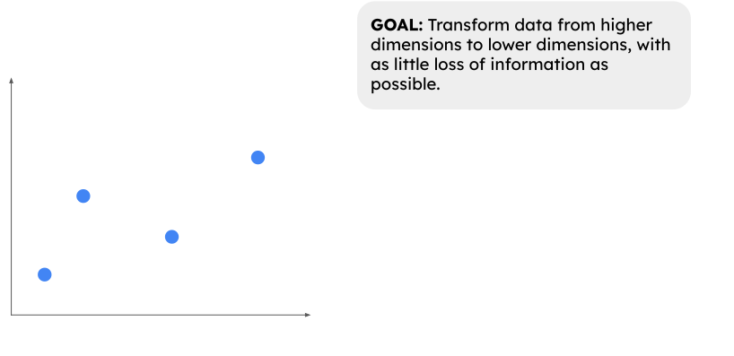Projecting into Smaller Dimensions
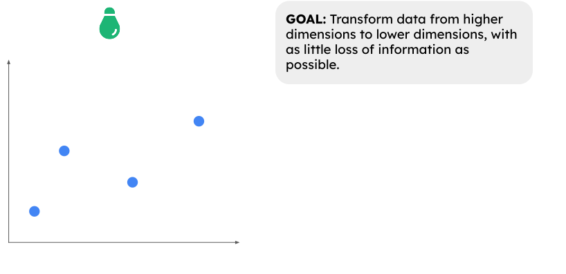Projecting into Smaller Dimensions
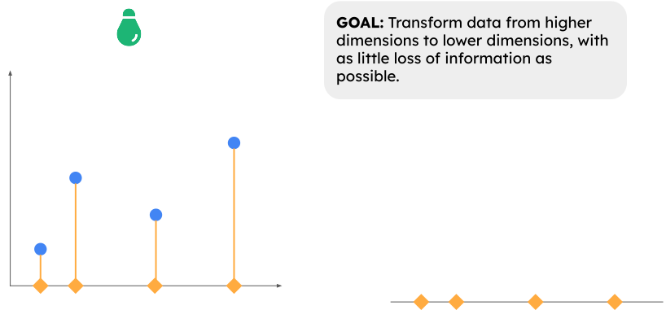Projecting into Smaller Dimensions
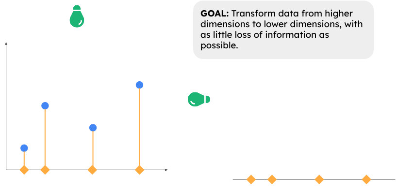Projecting into Smaller Dimensions
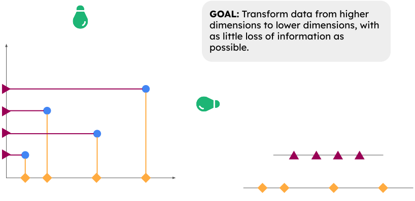Projecting into Smaller Dimensions
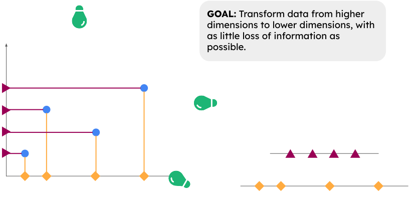Projecting into Smaller Dimensions
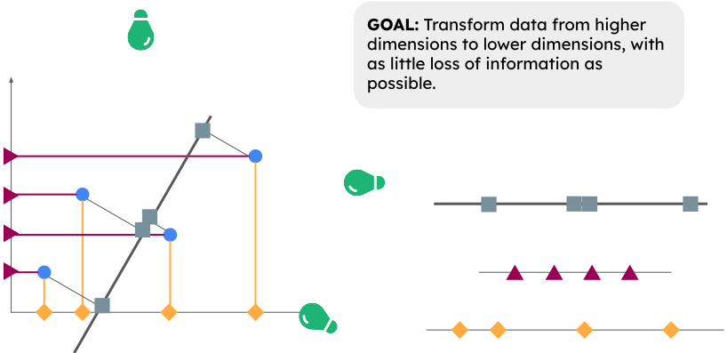Projecting into Smaller Dimensions
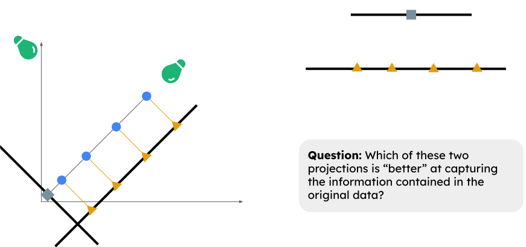Seems like we might want to preserve as much variance as possible!
The Goal, Revisited
Goal
Identify the directions (in the cloud of variables) along which there is maximal variance. Then, project onto a subspace spanned by these directions to obtain a low-dimensional representation of the data.
We’ll set up some of the math today, and continue our discussion tomorrow.
First, let’s work toward a more specific goal:
Goal
Identify the vector \(\vect{v}\) such that \(\mat{X} \vect{v}\) (the column mean-centered data projected onto \(\vect{v}\)) has maximum variance (when compared to all other such vectors).
PCA: A First Pass
Direction of Maximal Variance
- Crucially, we’ll assume the columns of \(\vect{X}\) have mean zero.
- In
R, we can accomplish this using thescale()function.
- In
- Remember how to express the variance of \(\mat{X} \vect{v}\) in terms of standard linear algebra operations?
- Squared-norm!
- The variance of \(\mat{X} \vect{v}\) is proportional to \[ \| \mat{X} \vect{v} \|^2 = (\mat{X} \vect{v})^{\mathsf{T}}(\mat{X} \vect{v}) = \tvect{v} \tmat{X} \mat{X} \vect{v} \]
- So, the direction \(\vect{v}\) of maximal variance is the one for which \(\tvect{v} \tmat{X} \mat{X} \vect{v}\) is maximized.
PCA: A First Pass
Direction of Maximal Variance
- This maximization problem, however, is ill-posed without further constraints.
- Specifically, if \(\vect{v}\) is a direction of maximal variance, so too will \(c \vect{v}\) be for any constant \(c\).
- So, let’s add the following constraint: \(\vect{v}\) must be of unit-length.
Goal
Identify the unit vector \(\vect{v}\) such that \(\mat{X} \vect{v}\) (the column mean-centered data projected onto \(\vect{v}\)) has maximum variance.
\[ \argmax_{\vect{v}} \left\{ \tvect{v} \tmat{X} \mat{X} \vect{v} \right\} \quad \text{s.t.} \quad \tvect{v} \vect{v} = 1 \]
PCA: A First Pass
Direction of Maximal Variance
Constrained optimization problems like this are most often solved using Lagrange Multipliers, which we will discuss further in a future lab.
- If you’d like a primer, I encourage you to check out this video.
- Again, I don’t expect you to follow every step of the following computation yet!
We first construct the lagrangian \(\mathcal{L}(\vect{v}, \lambda) := \tvect{v} \tmat{X} \mat{X} \vect{v} - \lambda \tvect{v} \vect{v}\).
Then we differentiate wrt. \(\vect{v}\) and set equal to zero: \[ \tmat{X} \mat{X} \vect{v} - \lambda \vect{v} = 0 \] or, in other words, \((\tmat{X} \mat{X}) \vect{v} = \lambda \vect{v}\).
PCA: A First Pass
Direction of Maximal Variance
Goal
Identify the vector \(\vect{v}\) such that \(\mat{X} \vect{v}\) (the column mean-centered data projected onto \(\vect{v}\)) has maximum variance.
Result
The vector \(\vect{v}\) is given by an eigenvector of \(\tmat{X} \mat{X}\) with eigenvalue \(\lambda\).
- The variance of the projected data along \(\vect{v}\) is proportional to \(\tvect{v} \tmat{X} \mat{X} \vect{v}\).
- Since \(\vect{v}\) is an eigenvalue of \(\tmat{X} \mat{X}\), this simplifies to \(\vect{v}(\lambda \vect{v}) = \lambda \tvect{v} \vect{v}\)
- We assumed \(\vect{v}\) is of unit length, meaning the variance is proportional to the associated eigenvalue \(\lambda\).
PCA: A First Pass
Directions of Maximal Variance
In other words, the eigenvectors \(\vect{v}\) give the directions of maximal variance, and the eigenvalues \(\lambda\) give the amount of variance the projected data will have (all up to proportionality constants).
So, the eigenvector \(\vect{v}_1\) associated with the largest eigenvalue is the direction with the largest variance; the eigenvector \(\vect{v}_2\) associated with the second-largest eigenvalue is the direction with the second-largest variance; etc.
Pretty neat, huh?
- Seems like as good a place as any to leave off for today.
Next Time
- We will continue discussing the details of PCA.
- For example, now that we have the directions of maximal variance - what do we do?
- How many dimensions are enough to capture a “good” lower-dimensional approximation of our data?
- How do we do this in
R?
- Reminder: ICA01 is coming up this Thursday (July 3, 2025).
- An information document has been posted to the course website; please read it fully!
- Second Reminder: group formation for the Mid-Quarter Project is due tomorrow (Tuesday, July 1) by 11:59pm.

PSTAT 100 - Data Science: Concepts and Analysis, Summer 2025 with Ethan P. Marzban